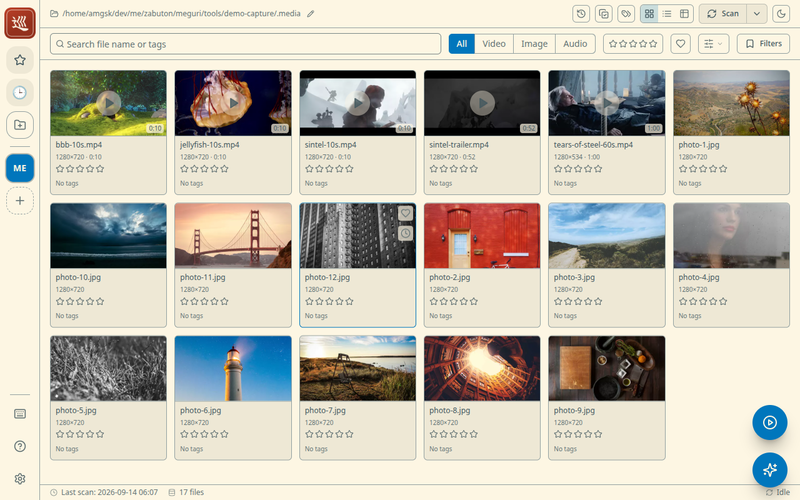
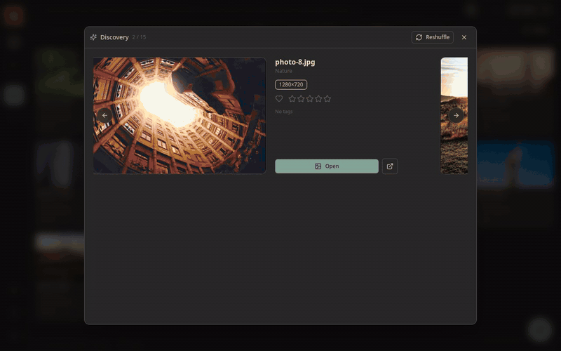

Meguri User Guide
Everything you need to browse, search, and rediscover your local videos and photos.
Contents
- Getting started
- Browsing your library
- Playing videos and viewing photos
- Search and filters
- Tags, ratings, and favorites
- Collections
- Discovery
- Scene bookmarks and history
- Workspaces
- The tray icon and quitting
- Themes, language, and zoom
- Where your data lives
- FAQ
Getting started
Install Meguri from the download page, then launch it. On first launch the library is empty, and a screen prompts you to add a folder.
- Click the + button in the left sidebar (or the prompt on the empty screen) and pick a folder that contains your videos or photos.
- Meguri scans the folder recursively and starts generating thumbnails in the background. Progress is shown while it works — you can start browsing right away as items appear.
- That's it. The folder is remembered, and every later launch re-checks it automatically for new, changed, moved, or deleted files.
Browsing your library

The main screen shows your library as an endless, scrollable wall of thumbnails. Three layouts are available from the header, so you can switch between visual browsing and detail-oriented lists:
- Grid — large thumbnails, best for visual scanning.
- List — thumbnail plus name and key details per row.
- Table — compact rows with sortable columns for working through a lot of files quickly.
Scrolling is infinite — items load as you go, even in very large libraries. Use Ctrl + mouse wheel (or Ctrl + +/-) to make everything larger or smaller at any time.
Playing videos and viewing photos
Click any thumbnail to open the detail view. It appears over the library, so closing it (or pressing Esc) drops you right back where you were.
- Videos play immediately with full seeking. Hovering the seek bar shows frame previews so you can find a scene before jumping to it. Common formats (mp4, webm, mkv, avi, and more) play in-app.
- Photos are shown full size.
- If a file uses a codec the built-in player can't handle, use Open externally to hand it to your system's default player.
The detail view is also where you edit a file's tags and rating, mark it as a favorite, and add scene bookmarks.
Search and filters
The search bar at the top filters your whole library. You can combine:
- Text search — matches file names, paths, and tags (full-text search, so partial words work).
- Kind — only videos, or only images.
- Tags — one or more tags.
- Rating — minimum ★ rating.
- Favorites — only files you've marked.
- Capture date/time — when the media was recorded.
Every active condition appears as a badge under the search bar. Click a badge's × to remove just that condition. Sort order (name, date, size, rating, …) is chosen next to the search bar.
Tags, ratings, and favorites
- Tags — add free-form tags in the detail view; the input autocompletes from tags you've already used.
- Ratings — rate files from ★ to ★★★★★.
- Favorites — a one-click heart for the files you come back to.
All of these stick to the file's content, not its location: if you later rename a file or move it to another folder inside the same workspace, your tags, rating, favorite mark, and history follow it automatically after the next scan.
Collections
Meguri has two ways to group files, for two different jobs:
| Collections | Smart collections | |
|---|---|---|
| What they are | Hand-picked sets of files, like playlists or albums. Can mix files from different workspaces, and each can have its own emoji icon. | Saved searches. You name a set of search conditions and re-run it with one click. |
| How to build one | Create a collection in the sidebar, then add files to it from the detail view or context menu. | Set up a search you like, then save it from the search area. |
| What's inside | Exactly the files you added, in the order you arrange them. | Whatever currently matches the conditions — new files that match show up automatically. |
Discovery

The bigger a library grows, the more of it sinks out of sight. Discovery deals you a random hand from your library — videos come with at-a-glance scene previews, so you can judge each pick without opening it. One click reshuffles the deck; one more starts playback. Great for rediscovering things you forgot you had.
Scene bookmarks and history
- Scene bookmarks — while watching a video, save the current position as a named bookmark. Later, jump straight back to that scene from the detail view.
- Playback history — Meguri remembers what you've played and when, so recently and frequently watched items are easy to find again. Like tags, history survives file moves and renames.
Workspaces
Each folder you add is a workspace with its own independent library — its own database, thumbnails, and scan schedule. The icon rail on the far left (Slack-style) lets you add, switch between, and remove workspaces.
- Removing a workspace removes it from Meguri only — the folder and your media files on disk are untouched.
- The special All workspace searches across every registered workspace at once — handy when you don't remember which library something is in.
- Re-scan the current workspace any time with the Scan button in the header. Scans are incremental: only new or changed files are processed, and moved or renamed files are recognized by content so their metadata is preserved.
The tray icon and quitting
Meguri lives in your system tray. Closing the window hides it to the tray instead of quitting — the app keeps running so it can reopen instantly. Click the tray icon to bring the window back.
To exit completely, choose Quit from the tray icon's menu (on macOS, Cmd+Q also works).
Themes, language, and zoom
- Themes — pick from base16 themes (gruvbox, solarized, nord, catppuccin, tokyo night, and more) in Settings. The entire UI follows the theme, in light and dark variants.
- Language — the UI is available in English, 日本語, Español, Français, 한국어, and 简体中文. Switch in Settings.
- Zoom — Ctrl + mouse wheel or Ctrl + +/- to scale the UI; Ctrl + 0 resets.
Where your data lives
Everything Meguri creates is kept in one place, separate from your media
(locations shown for Linux; on Windows it's under %APPDATA%,
on macOS under ~/Library/Application Support):
~/.config/Meguri/config.json— your registered workspaces and settings.~/.config/Meguri/roots/<id>/db.sqlite— the library database for one workspace (tags, ratings, history, metadata).~/.config/Meguri/roots/<id>/thumbs/— generated thumbnails.
Privacy: Meguri never connects to the internet. There is no telemetry, no analytics, and no account. All features work fully offline; the only network activity is a local server on your own machine that streams your files to the app window.
FAQ
A video won't play — what do I do?
Most formats play in-app, but a few codecs aren't supported by the built-in player. Use Open externally in the detail view to play the file with your system's default player.
I added files to my folder but they don't show up.
Click Scan in the header to re-scan the workspace. New files are also picked up automatically the next time the app starts.
I moved/renamed files — did I lose my tags?
No. Meguri identifies files by their content, so tags, ratings, favorites, and history follow a file across renames and moves within the same workspace. Just run a scan after reorganizing.
Does Meguri change my files in any way?
No. Meguri only reads the folders you add. Thumbnails and metadata are stored in its own app-data folder, never next to your media.
How do I uninstall cleanly?
Uninstall the app as usual for your OS, then delete Meguri's app-data folder (see Where your data lives) if you also want to remove thumbnails, tags, and settings. Your media files are unaffected.